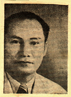

HOME

This site is dedicated to preserving the memory of my grandfather Dr. Jaime Laico, a "pioneering Filipino scientist" and the surgeon who introduced plastic surgery to the Philippines. The articles come from the fragile yellow newsclippings from his own scrapbook. By scanning the images and publishing the articles in hypertext, I hope to free them from the physical limitations of paper and preserve them for the "postliterate" age -- Andrew, September 1, 1996
Contents
SKIN GRAFTING THE SUNDAY TIMES January 25, 1948
WHO CHOOSES LOCAL DOCTOR THE MANILA BULLETIN November 14, 1949
A NEW FACE THIS WEEK December 23, 1951
NOSELIFTER by Carmen Guerrero Nakpil SUNDAY TIMES MAGAZINE June 22, 1952
INTERVIEW: JAIME LAICO by Amelia T. Valencia THE CHRONICLE September 29, 1955
FILM ACTRESS FILES CHARGES VS. ESTELA
TOO MUCH COSMETICS BRINGS WRINKLES By Leticia V. Jimenez August 10, 1960
CALL ON MARCOS THE MANILA TIMES
February 15, 1966

HOME